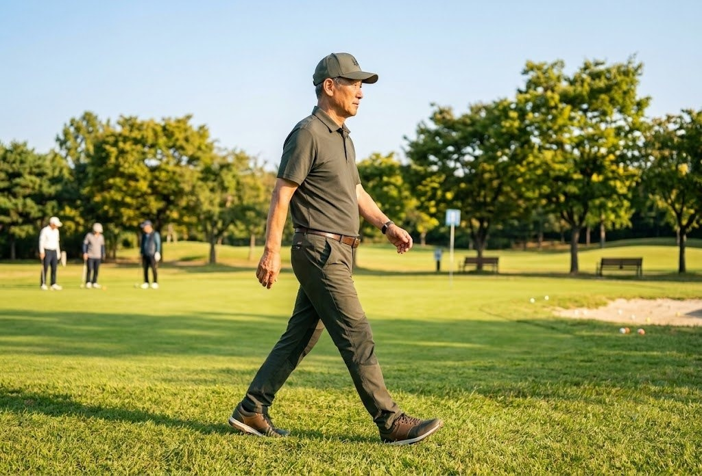
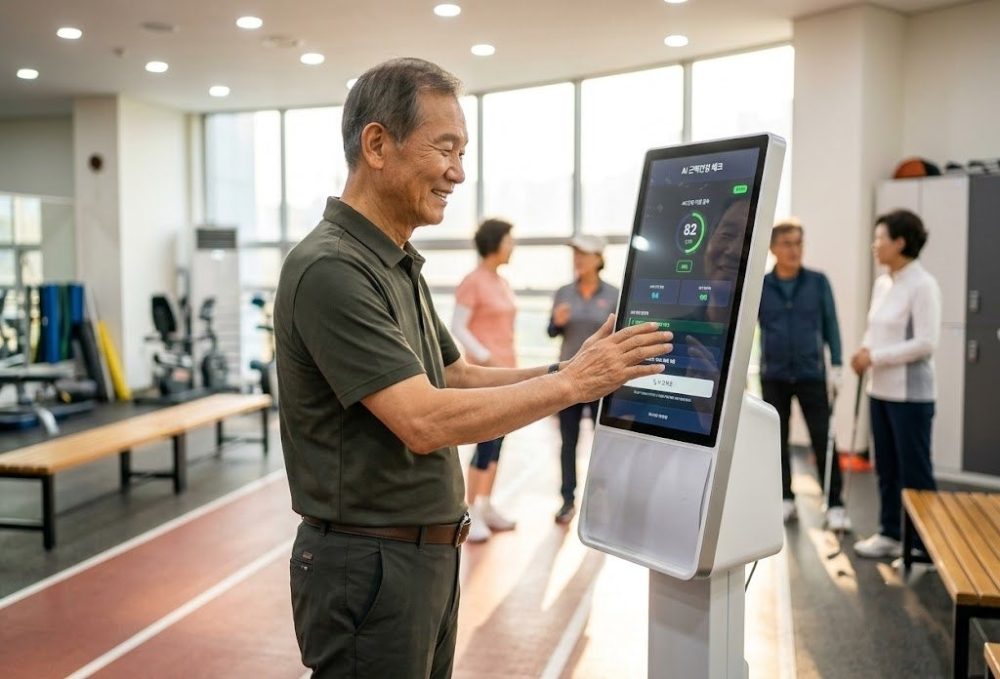
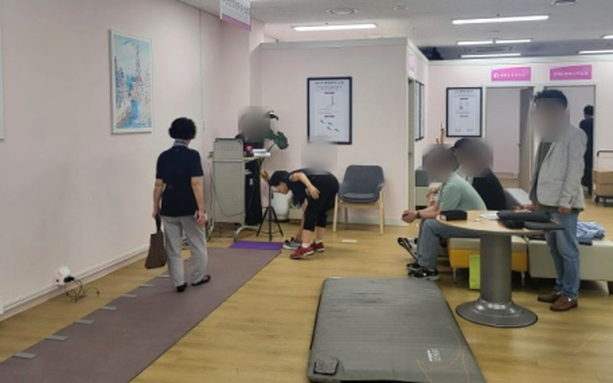
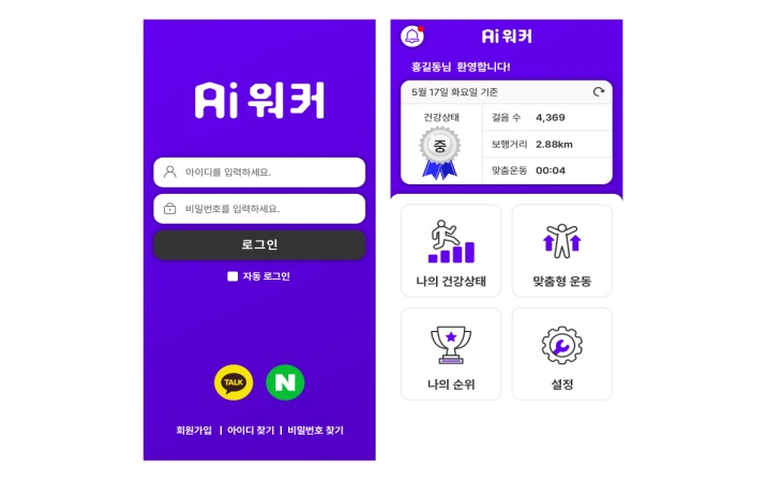
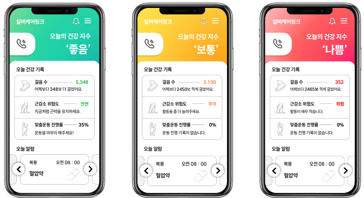
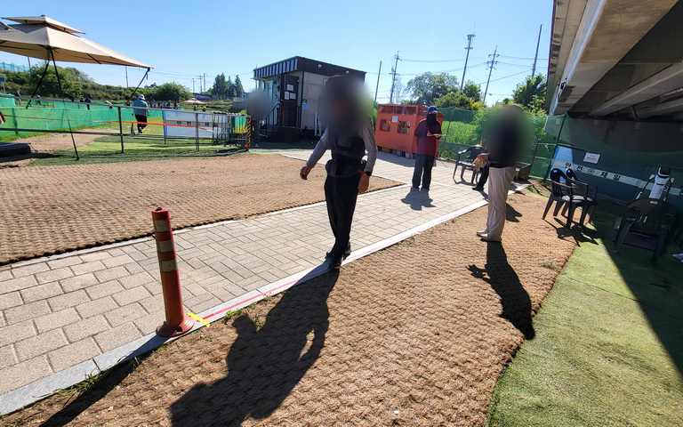

시설에서 간편하게 체크인한 뒤 평소처럼 걸으면 스마트폰 센서가
걸을 때의 움직임 데이터를 조용히 수집합니다.
특별한 동작이나 새로 배울 것은 없습니다.

AIWALKER가 보행속도·걸음수·보폭 등 보행 특성을 분석하고,
결과를 이해하기 쉬운 단계별 근육 건강 관리 신호로 제공합니다.

측정 기록을 누적해 자신의 이전 결과와 변화 추이를 확인합니다.
다른 사람과 단순 비교하지 않고, 개인의 변화 흐름을 중심으로
근육 건강 관리 정보를 살펴봅니다.
실버케어링크를 통해 본인 동의 범위에서 보호자가
변화 추이와 알림을 함께 확인할 수 있습니다.
일상에서 변화를 꾸준히 살펴볼 수 있도록 본인과 보호자를 연결합니다.
스마트폰 센서 기반 보행·행동·낙상 분석 알고리즘을 개발하고, KTC 공인시험으로 보행속도·걸음수·보폭의 오차율 8% 이하를 확인했습니다.

KTC 공인시험AIWALKER 앱을 개발하고, 고령자 보행 데이터 수집부터 결과 확인과 개인 변화 추적까지 이어지는 서비스 흐름을 구현했습니다.

AIWALKER 앱누적 보행 데이터를 바탕으로 개인의 변화를 단계별 근육 건강 관리 신호로 제공하는 AI 모델을 고도화하고 관련 특허를 출원했습니다.

실버케어링크 UI광주 서구체육회 파크골프장 리빙랩에서 고령자 보행 데이터를 수집하고, 측정·분석·결과 제공 전 과정의 현장 운영성을 검증하고 있습니다.

파크골프 현장 실증광주·전남 체육·복지시설에서 실증 레퍼런스를 축적하고, 지자체와 운영기관이 반복 도입할 수 있는 AI 근육건강 체크존 모델로 확산하는 것이 다음 목표입니다.
고령자 이용 규모, 운영 공간과 측정 방식을 확인해 현장에 맞는 실증 범위와 도입 방안을 함께 설계합니다.